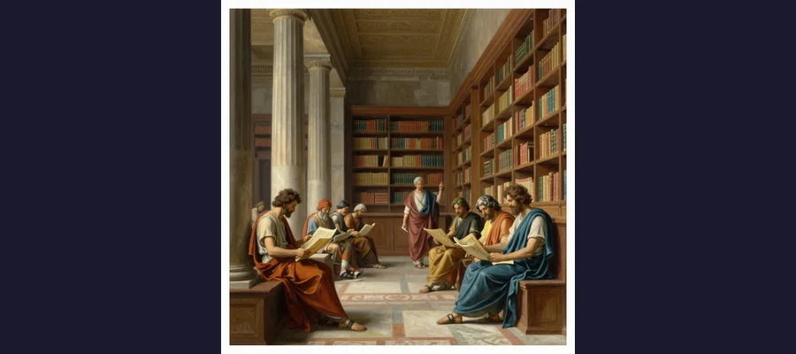
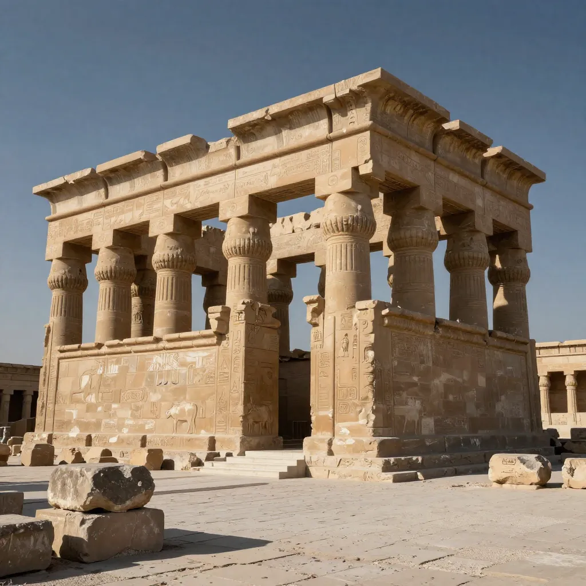

The Library of Alexandria: The Greatest Collection of Knowledge the Ancient World Ever Knew

The Library of Alexandria once held up to 700,000 scrolls and employed the greatest minds of the ancient world. Its destruction remains one of history's greatest intellectual tragedies.
In the third century BCE, on the coast of Egypt, a dynasty of Greek pharaohs built something that had never existed before and has never truly been replaced. The Library of Alexandria was not merely a library — it was an audacious attempt to collect every book, every scroll, every piece of written knowledge in the known world. Royal agents were dispatched across the Mediterranean with bags of gold, instructed to buy or copy every text they could find. Ships arriving in Alexandria Harbor were searched, and any books found on board were seized, copied by professional scribes, and added to the collection. The library grew to hold an estimated 400,000 to 700,000 scrolls — the largest accumulation of knowledge in the ancient world. It was attached to the Mouseion, a research institute dedicated to the Muses, where the greatest minds of the Hellenistic world lived and worked at government expense. Euclid wrote his Elements there — the most influential mathematics textbook ever written. Eratosthenes calculated the circumference of the Earth with remarkable accuracy using nothing but a stick, a shadow, and geometry. Aristarchus of Samothrace proposed a heliocentric model of the solar system nearly 1,800 years before Copernicus. Callimachus catalogued the entire library into 120 scrolls of indexes, creating the first comprehensive bibliography in history. And then, over the course of several centuries, it was all destroyed — burned, scattered, forgotten. The loss of the Library of Alexandria is the single greatest catastrophe in the history of human knowledge, a wound so deep that we are still feeling its effects two thousand years later.
The story of the Library of Alexandria is not just a tragedy. It is a mirror in which we can see the fragility of civilization itself. Knowledge, we like to believe, is permanent — once discovered, it cannot be undiscovered. The Library of Alexandria proves otherwise. The Greeks who built it understood something that we have since forgotten: that knowledge requires institutions to preserve it, that institutions require funding and political will to maintain them, and that when the institutions fall, the knowledge falls with them. What was lost in Alexandria was not just a collection of papyrus scrolls. It was the accumulated intellectual achievement of the ancient world — centuries of science, philosophy, literature, medicine, and history that would take a millennium and a half to recover. Some of it was never recovered at all.
The Greatest Research Institute the World Had Ever Seen
The Library of Alexandria was conceived in the decades after Alexander the Great's death in 323 BCE, as his generals carved up his empire. Ptolemy I Soter, one of Alexander's most trusted commanders, seized Egypt and established the Ptolemaic dynasty. He chose Alexandria — the city Alexander had founded on the Mediterranean coast — as his capital and set about making it the intellectual center of the world. The idea for a universal library may have been suggested by Demetrius of Phalerum, an exiled Athenian statesman and philosopher who found refuge at Ptolemy's court. The library itself was most likely built during the reign of Ptolemy's son, Ptolemy II Philadelphus (reigned 285-246 BCE), who expanded the collection aggressively and established the Mouseion as a state-funded research institute.
The Mouseion — literally, the "Temple of the Muses" — was modeled on the Lyceum of Aristotle in Athens, but on a far grander scale. It provided housing, food, and salaries for scholars, who were expected to pursue their research without the distraction of earning a living. The complex included lecture halls, laboratories, dining halls, gardens, and the library itself. Scholars from across the Greek-speaking world were invited to Alexandria, making the Mouseion the first true research university in history. The atmosphere was one of intellectual ferment — mathematicians, astronomers, geographers, physicians, poets, and philosophers working side by side, sharing ideas and building on each other's discoveries.
📚 Scholars of the Mouseion: The Greatest Minds of the Ancient World
The roster of scholars who worked at the Library of Alexandria reads like a who's who of ancient science and scholarship. Euclid (c. 300 BCE) wrote his Elements there, establishing the foundations of geometry still taught today. Eratosthenes (c. 276-194 BCE) calculated the Earth's circumference at approximately 39,375 kilometers — astonishingly close to the modern value of 40,075 kilometers — using the angle of the Sun's shadow at different latitudes. Aristarchus of Samothrace (c. 217-145 BCE) proposed that the Earth orbits the Sun, anticipating Copernicus by nearly two millennia. Callimachus (c. 310-240 BCE) compiled the Pinakes, a 120-scroll catalogue of the library's entire collection, organized by author and subject — the first comprehensive library catalogue in history. Hero of Alexandria (c. 10-70 CE) invented the aeolipile, an early steam engine. Apollonius of Rhodes wrote the Argonautica. Manetho composed a history of the Egyptian pharaohs that remains the basis for modern Egyptian chronology. These scholars produced works of staggering genius, comparable to the Antikythera Mechanism in their technological sophistication and the Rosetta Stone in their linguistic importance.

A 19th-century artistic rendering of the Library of Alexandria's interior, where scholars from across the Mediterranean came to study the world's largest collection of knowledge.
The Mission: Collecting All the Knowledge in the World
The Ptolemies' acquisition policy was breathtaking in its ambition. Royal agents were sent to every port in the Mediterranean, from Athens to Rhodes to the Levantine coast, with instructions to purchase every scroll they could find. Ships docking at Alexandria Harbor were searched, and any books on board were confiscated, copied by the library's scribes, and the copies returned to their owners — or, in some accounts, the originals were kept and the copies returned. The Ptolemies reportedly borrowed the official Athenian state copies of the tragedies of Aeschylus, Sophocles, and Euripides, forfeiting a massive deposit of fifteen talents of gold rather than return the priceless originals.
The result was a collection of staggering proportions. Ancient estimates of the library's holdings range from 400,000 to 700,000 scrolls, though these figures are debated by modern scholars. A scroll was typically a single work or a portion of a longer work, so the number of individual texts was probably in the tens of thousands. The collection included works in Greek, Egyptian, Persian, Indian, Hebrew, and other languages, making it a truly multicultural repository. Callimachus's Pinakes catalogue listed works organized by genre and author, with brief biographies and critical assessments — essentially the first annotated bibliography. The library's scope was encyclopedic:
- Science and mathematics — Works on geometry, astronomy, physics, engineering, medicine, and natural history, including texts that have been lost forever
- Literature — The complete works of Greek dramatists, poets, and prose writers, including many plays by Aeschylus, Sophocles, and Euripides that no longer survive
- History and geography — Comprehensive accounts of civilizations across the known world, including Egyptian, Persian, Babylonian, and Indian histories that are now entirely lost
- Philosophy — The complete works of Aristotle (an estimated 150 scrolls, of which only about 30 survive), Plato, and dozens of other philosophical schools
- Medicine — Texts on anatomy, surgery, pharmacology, and diagnosis that were centuries ahead of their time
The Daughter Library at the Serapeum
As the main library grew, it eventually exceeded the capacity of the Mouseion building. During the reign of Ptolemy III Euergetes (reigned 246-221 BCE), a "Daughter Library" was established in the Serapeum — the temple of the syncretic god Serapis in the southwestern part of Alexandria. The Serapeum served as an overflow facility and a public-access counterpart to the main library (which was restricted to scholars). The Daughter Library held a substantial collection, estimated at approximately 42,800 scrolls in its own right. The Serapeum would outlast the main library by centuries, surviving as a center of learning until the late fourth century CE.
🔥 The Series of Disasters: How the Library Was Destroyed
Contrary to popular belief, the Library of Alexandria was not destroyed in a single catastrophic fire. It was the victim of multiple disasters spanning centuries, each chipping away at the collection and the institution until nothing remained. The most commonly cited events include: Julius Caesar's fire in 48 BCE, when Caesar set fire to ships in Alexandria Harbor during the Alexandrian War and the blaze spread to the waterfront warehouses where an estimated 40,000 scrolls were stored. The Roman emperor Aurelian's sack of the Brucheion quarter in 272 CE, during which much of the royal quarter — including the Mouseion — was devastated. The decree of Emperor Theodosius I in 391 CE, which ordered the destruction of pagan temples throughout the empire, leading to the demolition of the Serapeum by a Christian mob led by Bishop Theophilus of Alexandria. The murder of Hypatia in 415 CE, the brilliant female mathematician and philosopher who was the last great scholar associated with the Mouseion tradition, dragged from her chariot and killed by a Christian mob. And finally, the Arab conquest of Alexandria in 642 CE, after which the surviving books — if any remained — were reportedly destroyed on the orders of the caliph. The debate over which of these events was truly fatal continues to this day, with most modern scholars concluding that the library's decline was a gradual process rather than a single catastrophe.

The ruins of the Serapeum temple in Alexandria, which housed the Daughter Library and survived the original library by centuries before its own destruction.
Hypatia and the Final Glimmer of Light
The last great scholar of the Alexandrian tradition was Hypatia of Alexandria (c. 350-415 CE), a mathematician, astronomer, and Neoplatonist philosopher who taught at the Mouseion's successor institution and became the most famous female intellectual of the ancient world. Hypatia wrote commentaries on the works of Diophantus (the father of algebra) and Apollonius of Perga (conic sections), constructed astrolabes and hydrometers, and attracted students from across the Mediterranean. She was also a trusted advisor to Orestes, the Roman prefect of Alexandria, which made her a political figure as well as a scholarly one.
In March 415 CE, during a period of violent tension between Christians, pagans, and Jews in Alexandria, Hypatia was dragged from her chariot by a mob of Christian zealots, stripped naked, dragged through the streets to the Caesareum church, and murdered — reportedly by being flayed with sharp tiles and then burned. Her murder sent shock waves through the intellectual world. Whether or not she was the "last librarian of Alexandria" (a title she probably did not hold literally), her death symbolized the final extinction of the Alexandrian intellectual tradition — a tradition that had produced some of the greatest achievements of the human mind. Her murder has been linked, perhaps unfairly, to the broader destruction of pagan learning by the early Christian church, but it remains one of the most notorious episodes in the history of the conflict between religion and science.
😰 What Was Lost: A Civilization's Memory Erased
The true scale of what was lost with the Library of Alexandria is incalculable, but we can glimpse it through the references in surviving texts. We know the titles and authors of hundreds of works that no longer exist — works that were available in Alexandria and are now gone forever. Aristotle wrote an estimated 150 scrolls; only about 30 survive. The vast majority of Greek drama — including most of the plays of Aeschylus, Sophocles, and Euripides — is lost. Aristarchus's heliocentric treatise is gone. Eratosthenes' geographical works survive only in fragments. The histories of Berossus (Babylonian history), Manetho (Egyptian history), and dozens of other historians exist only as quotations in later works. Entire fields of ancient science, medicine, and engineering were simply erased. Some scholars have argued that the loss of the Library set Western civilization back by a thousand years or more — that if the library had survived, the scientific revolution might have begun in antiquity rather than in the sixteenth century. This is speculation, of course, but the loss is real and irreparable. The destruction of the Library of Alexandria is a reminder that knowledge is not self-sustaining — it requires active preservation, and when that preservation fails, the consequences can be catastrophic. The ancient world's greatest library, like the myth of Atlantis and the ruins of Pompeii, stands as a monument to what can be lost when civilization falters.
📚 The Fire That Never Stopped Burning
The Library of Alexandria was not destroyed by a single act of barbarism. It was destroyed by centuries of neglect, war, religious fanaticism, and political instability — by the slow, grinding failure of every institution that should have protected it. The Ptolemies who built it were replaced by Roman administrators who did not share their vision. The Roman Empire that inherited it fractured into rival states that could not maintain it. The Christian church that supplanted paganism viewed its contents with suspicion. The Arab conquerors who finally took Alexandria found, at most, the remnant of a remnant. The library did not die in a single dramatic conflagration. It bled to death over centuries, a slow extinction that is, in its own way, more tragic than any single fire could be. And yet the Library of Alexandria remains one of the most potent symbols in human history — a symbol of what we can achieve when we commit to the pursuit of knowledge, and what we lose when that commitment wavers. The Bibliotheca Alexandrina, a stunning modern library opened in Alexandria in 2002, stands as a tribute to what was lost and a declaration that the spirit of inquiry that built the ancient library is not dead. But the scrolls that filled the original library — the works of Euclid's successors, the lost plays of Sophocles, the treatises of forgotten geniuses — are gone forever, as irretrievable as the scrolls that survived by chance in the caves of Qumran, as irreplaceable as the treasures described in the Copper Scroll, and as mysterious as the vanished knowledge entombed with the boy pharaoh Tutankhamun. The Library of Alexandria reminds us that knowledge is the most precious and the most fragile of all human creations. It can be built over centuries and destroyed in a single generation. It is never safe. It must never be taken for granted.
Frequently Asked Questions
What was the Library of Alexandria?
The Library of Alexandria was the largest and most significant library of the ancient world, founded in the third century BCE in Alexandria, Egypt, under the Ptolemaic dynasty. It was part of a research institution called the Mouseion (Temple of the Muses) and held an estimated 400,000 to 700,000 scrolls covering every field of knowledge. Its mission was to collect every book in the known world. Scholars who worked there included Euclid, Eratosthenes, Callimachus, and Aristarchus of Samothrace.
Who destroyed the Library of Alexandria?
The library was not destroyed in a single event but declined over centuries through a series of disasters. Key events include Julius Caesar's fire in 48 BCE (which burned scrolls stored in harbor warehouses), the destruction of the Brucheion quarter by Emperor Aurelian in 272 CE, the destruction of the Serapeum (Daughter Library) under a Christian mob in 391 CE following Emperor Theodosius I's decree against paganism, and possibly the Arab conquest of Alexandria in 642 CE. Most modern scholars view the destruction as a gradual process rather than a single catastrophe.
Who was Hypatia of Alexandria?
Hypatia (c. 350-415 CE) was a mathematician, astronomer, and Neoplatonist philosopher who taught in Alexandria and was the most famous female intellectual of the ancient world. She wrote commentaries on algebra and conic sections, constructed scientific instruments, and advised the Roman prefect of Alexandria. In 415 CE, she was murdered by a Christian mob in a politically motivated killing that has become a symbol of the conflict between religious fanaticism and intellectual inquiry. Her death is often associated with the final extinction of the Alexandrian scholarly tradition.
What was lost when the Library of Alexandria was destroyed?
The losses were catastrophic and largely irrecoverable. We know the titles of hundreds of works that no longer survive, including the majority of Aristotle's writings (approximately 120 of 150 scrolls lost), most of the plays of Aeschylus, Sophocles, and Euripides, Aristarchus's heliocentric treatise, and countless works of history, science, medicine, and engineering. Some scholars estimate that the loss set Western civilization back by a thousand years or more. Only fragments of the library's collection survive, preserved in quotations by later authors or in accidental discoveries like the archaeological treasures that occasionally emerge from the ancient world.
📖 Recommended Reading
Want to learn more? Check out The Library of Alexandria by Islam Issa on Amazon for a deeper dive into this fascinating topic. (As an Amazon Associate, we earn from qualifying purchases.)
References & Further Reading
- Wikipedia: Library of Alexandria — Comprehensive article covering the library's founding, collections, scholars, and destruction
- Wikipedia: Hypatia of Alexandria — The mathematician and philosopher whose murder symbolized the end of the Alexandrian intellectual tradition
- Wikipedia: Mouseion — The research institute attached to the Library of Alexandria
- Wikipedia: Serapeum of Alexandria — The temple that housed the Daughter Library
- Wikipedia: Bibliotheca Alexandrina — The modern library opened in 2002 as a tribute to the ancient institution
- Wikipedia: Eratosthenes — The scholar who calculated the Earth's circumference at the Library of Alexandria
Editorial note: reconstructions are continuously revised as imaging and inscription studies improve. See our Editorial Policy.